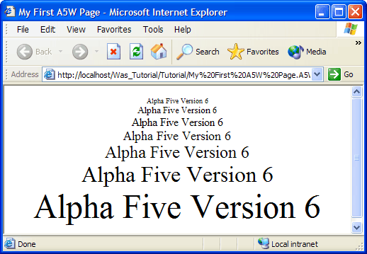

Running Xbasic in an A5W Page
You must use the HTML Editor to create a new A5W page.
Start the Application Server and display the Web Projects Control Panel.
Click New > Web Page (A5W) > OK.
Display the Source tab of the editor.
Type the following text into the editor.
<html> <head> <meta name="generator" content="Alpha Five HTML Editor"> <title>My First A5W Page</title> </head> <body> <%a5 dim nSize as N %> <center> <%a5 for nSize = 1 to 7 %> <font size= <%a5 ? nSize %> >Xbasic in an A5W Page<br></font> <%a5 next nSize %> </center> </body> </html> |
Select File > Save As.
Enter "My First A5W Page" in the File name field and click Save.
Click
 to close the HTML Editor.
to close the HTML Editor.Display the A5W Pages page of the Web Projects Control Panel.
Right click the "My First A5W Page" entry and select Publish (Local Webroot) and open. Your new page will appear in your Internet browser. The results should look like this.

Understanding How the Page Works
If your new page A5W page is not visible in the Web Projects Control Panel, select A5W Pages in the left pane.
Open your page in the HTML Editor by selecting it and clicking
 Edit.
Edit.
The first thing to note is that the page has embedded Xbasic code that begins with <%a5 and ends with %> . This distinguishes the Xbasic code from the HTML code around it. Another thing to note is that Xbasic code should be inside of the <BODY> ... </BODY> tags that define the normal HTML page. The first three lines:
<%a5 dim nSize as N %> |
DIM s a numeric variable named Size. The DIM command creates a variable and optionally assigns it an initial value.
Three more pieces of Xbasic code lie between the <CENTER> and </CENTER> tags. The first line starts a FOR ... NEXT loop based on the Size variable. The FOR ... NEXT loop initially sets the value of nSize to 1, executes the code between the FOR and NEXT statements, increments nSize by 1, and tests to see if nSize is greater than 7. If not, it repeats the loop. If nSize is greater than 7, control switches to the first line of code after the NEXT statement.
<%a5 for nSize = 1 to 7 %> |
The next line embeds the following Xbasic: <%a5 ? nSize %> in the middle of a line of HTML.
<font size= <%a5 ? nSize %> >Xbasic in an A5W Page<br></font> |
Removing the Xbasic, you can see a standard line of HTML, missing only the font size parameter.
<font size= >Xbasic in an A5W Page<br></font> |
The Xbasic "?" means "insert into the HTML text stream whatever follows", which in this case is the value of nSize .
<%a5 ? nSize %> |
The last line of Xbasic ends the FOR ... NEXT loop.
<%a5 next nSize %> |
The result is that the page generates the line "Xbasic in an A5W Page" seven times, with different font sizes.
Suppose you wanted to change the text on the page from "Xbasic in an A5W Page" to "My First Page".
Display the A5W Pages page of the Web Projects Control Panel.
Select the "My First A5W Page" page and click
Edit .Select the "Xbasic in an A5W Page" text and type the new text.
Click
 to save your changes.
to save your changes.Click
to close the HTML Editor.Display the A5W Pages page of the Web Projects Control Panel.
Right click the "My First A5W Page" entry and select Publish (Local Webroot) and open. Your edited page will appear in your Internet browser.
See Also